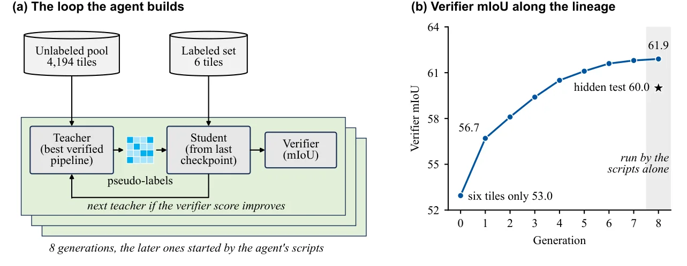
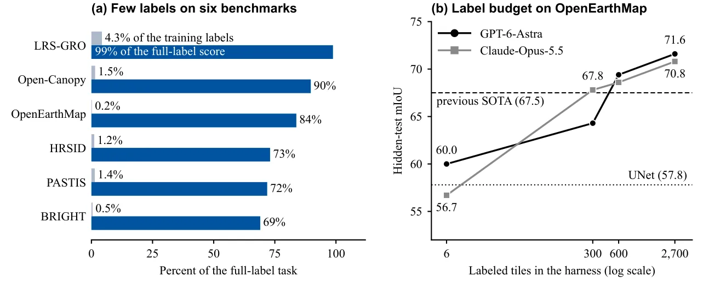

O Gargalo da Engenharia Manual em Sensoriamento Remoto
A construção de modelos de aprendizado de máquina para observação da Terra (Earth Observation - EO) ainda é, em grande parte, um processo manual e intensivo em engenharia. Para cada novo sensor, região geográfica ou tarefa específica, especialistas precisam projetar receitas de treinamento, escolher arquiteturas e ajustar hiperparâmetros contra benchmarks. Embora os modelos fundacionais tenham elevado o ponto de partida, eles não eliminaram a necessidade de adaptação especializada. Em muitos casos, um modelo supervisionado simples, como uma U-Net, ainda supera modelos fundacionais complexos quando aplicados a dados específicos de EO.
Este processo artesanal cria um gargalo crítico. Quando um desastre natural ocorre, um novo satélite é lançado ou é necessário mapear uma nova região afetada por incêndios ou inundações, a necessidade de um modelo robusto é imediata. No entanto, a engenharia especializada pode levar semanas ou meses. Muitas agências e países não possuem equipes de machine learning dedicadas, deixando-as desprovidas de ferramentas analíticas avançadas exatamente quando mais precisam delas.
Um novo paper introduz o RSI4EO, um framework que transfere a construção do modelo para agentes de código generalistas. A premissa é simples, mas radical: qualquer tarefa verificável pode ser decomposta em dois componentes definidos por humanos — um 'harness' (aquecedor) que define os recursos disponíveis e um 'verifier' (verificador) que define o sucesso. O agente, então, escreve código, treina modelos e os melhora recursivamente sobre suas próprias saídas, sem intervenção humana direta no ciclo de otimização.
Os resultados são impressionantes. Modelos construídos por agentes superam o estado da arte em seis benchmarks que abrangem imagens ópticas, radar de abertura sintética (SAR) e séries temporais multiespectrais. Em tarefas de mapeamento de cobertura do solo, os modelos alcançam desempenho de estado da arte utilizando apenas 11% dos rótulos de treinamento disponíveis. Este artigo explora como esse mecanismo funciona, os detalhes técnicos do loop de autoaperfeiçoamento e as implicações para o futuro do sensoriamento remoto.
Tarefas como Harness e Verifier
O cerne do RSI4EO é a reformulação de tarefas de EO como problemas de otimização contra um verificador selado. Em vez de um pesquisador definir manualmente cada etapa do pipeline de treinamento, o sistema define um ambiente restrito e uma métrica de sucesso. O agente de código opera dentro desse ambiente, recebendo apenas a pontuação gerada pelo verificador, sem acesso direto aos dados de validação ou aos rótulos de teste.
Essa abordagem não é nova em outros domínios. Em raciocínio matemático e descoberta de programas, verificadores já impulsionam avanços significativos, permitindo que agentes refinem suas estratégias através de tentativa e erro. No entanto, o sensoriamento remoto apresenta particularidades únicas. A verificabilidade pode ser alcançada através de benchmarks com dados rotulados, sensores independentes, modelos físicos ou observações repetidas do mesmo local ao longo do tempo. O RSI4EO unifica essas diversas fontes de verificação sob uma única interface: uma função que retorna uma pontuação escalar.
Ao definir a tarefa apenas pelo harness e pelo verifier, configurações que eram tratadas como problemas de pesquisa separados tornam-se escolhas de configuração. Por exemplo, aprender com poucos rótulos (few-shot learning) é simplesmente restringir a quantidade de dados rotulados no harness. A adaptação de domínio (domain adaptation) é alcançada posicionando o verifier em um domínio diferente do treinamento. A busca por orçamentos de rótulos (label-budget search) pede ao agente o menor conjunto de treinamento que atinja uma pontuação alvo. Essa generalidade permite que um único agente resolva uma vasta gama de tarefas de EO.

O Harness e o Verifier Selado
O sistema RSI4EO opera através de dois componentes principais que são especificados antes da execução do agente. O primeiro é o Harness (H), que define o conjunto de recursos que o agente tem permissão para usar. Isso inclui os dados de treinamento rotulados (DL), um pool de dados não rotulados (DU), checkpoints de modelos pré-treinados, bibliotecas de software e um orçamento de computação. No experimento descrito, o agente tem acesso a quatro GPUs GB200 e um orçamento de 12 horas, com a restrição de que nenhuma execução de treinamento individual pode exceder 4 horas.
O Harness também fornece um pipeline inicial simples, servindo como ponto de partida. Para tarefas de segmentação, isso pode ser um codificador EfficientNet-B0 com um decodificador FPN. O agente pode utilizar bibliotecas padrão da área, como QGIS, SAGA, GDAL, e backbones específicos para tarefas de detecção. Importantes, os modelos pré-treinados fornecidos são geralmente codificadores (sem cabeças de tarefa ou decodificadores), como o DINOv3 ViT-L/16 ou o DINOv2, permitindo que o agente construa a arquitetura completa do modelo do zero.
O segundo componente é o Verifier (V), que define o que conta como sucesso. O verifier é selado, rodando em um contêiner isolado que contém os dados de validação (Xv, Yv) que o agente nunca vê. Ele executa o pipeline submetido pelo agente exatamente como o classificador final faria, retornando uma pontuação s(π) = m(π(Xv), Yv), onde m é a métrica da tarefa (como mIoU ou mask AP). O agente pode consultar o verifier quantas vezes quiser, mas recebe apenas o score numérico. Isso impede vazamento de dados e garante que o agente otimize para a métrica real de avaliação.
Autoaperfeiçoamento Recursivo
A inovação central do RSI4EO é o mecanismo de autoaperfeiçoamento recursivo. O agente não apenas tenta treinar um modelo uma vez; ele constrói o modelo sobre as saídas de gerações anteriores. O processo funciona em 'gerações'. Na primeira geração, o agente recebe o harness padrão e o verifier, escreve um pipeline de treinamento e o avalia. O verifier retorna uma pontuação.
Nas gerações subsequentes, o agente utiliza as saídas do melhor pipeline encontrado até aquele momento. Especificamente, o melhor pipeline é usado para gerar pseudo-rótulos para o pool de dados não rotulados. O agente então treina um novo modelo (o 'estudante') a partir do checkpoint do melhor modelo (o 'professor'), combinando os dados rotulados originais com os pseudo-rótulos gerados. Além disso, o sistema utiliza 'soft targets' e previsões OOF (Out-Of-Fold) para fornecer sinais de treinamento mais suaves e robustos.
O verifier atua como um juiz seletivo. Ele avalia o novo pipeline gerado na geração atual. Se o novo pipeline obtiver uma pontuação melhor, ele se torna o novo 'melhor pipeline' e será usado para gerar pseudo-rótulos na próxima geração. Se não, o pipeline anterior é mantido. O agente também decide, através de seus próprios scripts, quando automatizar o loop ou quando encerrar a busca. Essa recursão permite que o modelo refine gradualmente suas previsões, aprendendo padrões que não estavam presentes nos dados rotulados iniciais.
Esse ciclo de 'escrever código, treinar, verificar e iterar' é executado offline, sem interação humana. O agente pode explorar arquiteturas, funções de perda, estratégias de augmentação de dados e métodos de ensemble que um humano poderia levar dias para propor e testar sistematicamente.

Resultados em Benchmarks Diversos
Os autores avaliaram o RSI4EO em seis benchmarks diversos, cobrindo diferentes modalidades de imagem e tarefas. Os benchmarks incluem BRIGHT e PASTIS para segmentação semântica de cobertura do solo, HRSID para detecção de navios, OpenEarthMap para segmentação de alta resolução, Open-Canopy para estimativa de altura de dossel florestal e uma tarefa de resposta a perguntas (QA) usando imagens de satélite. Essa diversidade testa a capacidade do agente de generalizar entre tarefas de detecção, segmentação e regressão.
Os resultados mostram que os modelos construídos pelo agente superam o estado da arte (SOTA) em todos os seis benchmarks. No benchmark BRIGHT, o agente alcançou um mIoU de 71.56, superando o SOTA de 68.86 em 2.70 pontos. No PASTIS, o ganho foi de 2.63 pontos (69.72 vs 67.09). No HRSID, a melhoria foi de 4.8 pontos em mask AP (68.7 vs 63.9). Para o OpenEarthMap, o modelo do agente atingiu 71.6 de mIoU, superando o SOTA de 67.5 em 4.1 pontos.
Um aspecto particularmente notável é a eficiência na utilização de rótulos. Em tarefas de mapeamento de cobertura do solo, o modelo alcançou desempenho de estado da arte utilizando apenas 11% dos rótulos de treinamento disponíveis. Em alguns casos, com apenas 4,3% dos rótulos, o modelo atingiu até 99% da precisão máxima possível com todos os dados. Isso demonstra que o mecanismo de auto-aprendizado e o uso de dados não rotulados são eficazes para reduzir a dependência de anotações manuais caras.
Para a tarefa de resposta a perguntas, que utiliza um modelo de visão e linguagem (Qwen3-VL-8B), o agente foi capaz de otimizar prompts e estratégias de inferência para melhorar a precisão das respostas, demonstrando a flexibilidade do framework para tarefas além da segmentação tradicional.

Análise dos Resultados e Limitações
A tabela comparativa dos resultados no teste oculto (hidden-test) confirma a superioridade dos modelos construídos pelo agente. O pipeline inicial ('starter'), que é uma configuração básica fornecida pelo harness, serve como linha de base. O ganho do agente sobre o starter é significativo em todos os casos, mas o ponto crucial é que o agente supera modelos que foram projetados e ajustados por especialistas humanos ao longo de anos de pesquisa.
É importante notar que o agente operou com um orçamento de tempo e computação limitado. 12 horas em 4 GPUs GB200 é um recurso considerável, mas não infinito. O fato de o agente conseguir explorar o espaço de soluções de forma tão eficiente sugere que os modelos de linguagem e código atuais são capazes de navegar complexidades de engenharia de ML que antes exigiam intuição humana especializada. O agente não apenas replica o SOTA; ele o supera, indicando que a busca automatizada pode encontrar configurações que escaparam à exploração humana.
Além disso, o sistema demonstrou robustez em tarefas de adaptação de domínio. Em configurações onde o agente não podia treinar parâmetros (training-free adaptation), ele ainda conseguiu obter bons resultados ajustando apenas o código de inferência e pré-processamento, mostrando que o harness e o verifier podem ser configurados para restringir a capacidade de aprendizado do agente conforme a necessidade da tarefa.
Apesar dos resultados promissores, é crucial reconhecer as limitações e o escopo deste trabalho. O RSI4EO foi testado em um conjunto específico de benchmarks e agentes. Os autores mencionam que este é um projeto em andamento e que estão escalando os experimentos para um maior número de tarefas e agentes. A generalização para tarefas de EO não cobertas pelos benchmarks atuais, ou para regiões geográficas com características extremas não representadas nos dados de treinamento, permanece a ser verificada.
Outra limitação é a dependência da qualidade do agente de código. O desempenho do sistema está diretamente ligado à capacidade do modelo de linguagem subjacente de escrever código Python funcional e de entender as nuances do framework de deep learning. Se o agente falhar em gerar código executável ou introduzir bugs sutis, o ciclo de iteração pode ser interrompido ou levar a convergências prematuras. A segurança e a robustez do código gerado por agentes também são preocupações válidas em ambientes de produção.
Além disso, o custo computacional, embora otimizado, ainda é alto para algumas organizações. 12 horas em GPUs de última geração não são acessíveis para todos. No entanto, a proposta é que, à medida que a capacidade dos agentes melhorar, o esforço humano necessário para definir o harness e o verifier se tornará o único custo significativo, enquanto a construção do modelo se torna automática e escalável.
Um Novo Paradigma para EO
O RSI4EO propõe um novo paradigma para a construção de modelos de sensoriamento remoto. Ao separar a definição da tarefa (humana) da construção do modelo (agente), o framework permite que os avanços na capacidade dos agentes de IA se traduzam diretamente em modelos de EO melhores, sem a necessidade de nova engenharia humana. Isso reduz drasticamente o tempo entre a identificação de uma nova necessidade (como um desastre ou um novo satélite) e a disponibilidade de um modelo funcional.
Para agências governamentais, ONGs e empresas que dependem de dados de satélite, essa abordagem oferece a promessa de democratizar o acesso a modelos de alta precisão. Qualquer entidade capaz de definir uma tarefa verificável pode obter um modelo de estado da arte, independentemente de ter uma equipe de ML dedicada. Isso é particularmente relevante para países em desenvolvimento ou regiões afetadas por crises, onde a infraestrutura de pesquisa pode ser limitada.
O sucesso do RSI4EO em superar o SOTA em múltiplos benchmarks sugere que a busca automatizada por arquiteturas e pipelines de treinamento é um caminho viável e promissor. À medida que os agentes de código se tornam mais capazes, é provável que vejamos uma convergência entre a pesquisa em IA geral e a aplicação em domínios específicos como o sensoriamento remoto, onde a verificabilidade é alta e os dados são abundantes.
Em resumo, o paper 'The Last Remote Sensing Model Built by Humans?' apresenta o RSI4EO, um framework que utiliza agentes de código para construir e melhorar recursivamente modelos de observação da Terra. Ao formalizar tarefas como pares de harness e verifier, o sistema permite que agentes gerem pipelines de treinamento que superam o estado da arte em seis benchmarks, usando apenas uma fração dos rótulos de treinamento. Este trabalho marca uma mudança significativa na forma como os modelos de EO são desenvolvidos, deslocando o esforço humano da implementação técnica para a definição de tarefas e recursos.
O que fica
- RSI4EO usa um 'harness' (recursos) e um 'verifier' (métrica selada) para permitir que agentes de código construam modelos de EO sem intervenção humana.
- Modelos gerados superam o SOTA em seis benchmarks (óptico, SAR, séries temporais) em 12 horas de computação em 4 GPUs GB200.
- A melhoria recursiva usa pseudo-rótulos das gerações anteriores, alcançando alta precisão com poucos dados rotulados.
- O paradigma separa a definição da tarefa (humana) da construção do modelo (agente), escalando a qualidade conforme os agentes melhoram.
Paper original: The Last Remote Sensing Model Built by Humans? Casting Any Earth Observation Task as Recursive Self-Improvement
Comentários
Nenhum comentário ainda. Seja o primeiro.